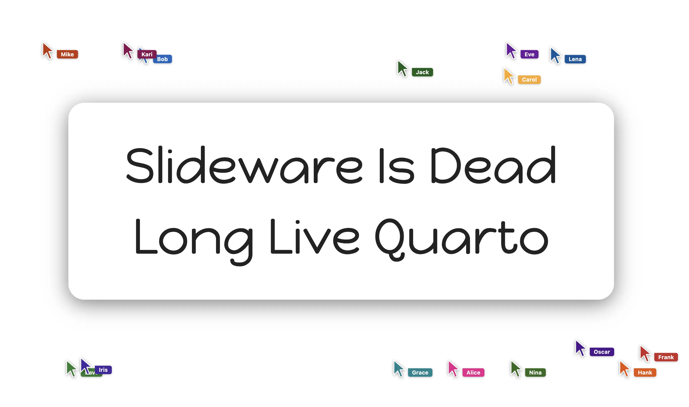
Slideware Is Dead: Long Live Quarto
Making the case for editable, code-generated slides with Quarto over LaTeX and drag-and-drop slideware
Date: Sep 16, 2026

Making the case for editable, code-generated slides with Quarto over LaTeX and drag-and-drop slideware
Date: Sep 16, 2026
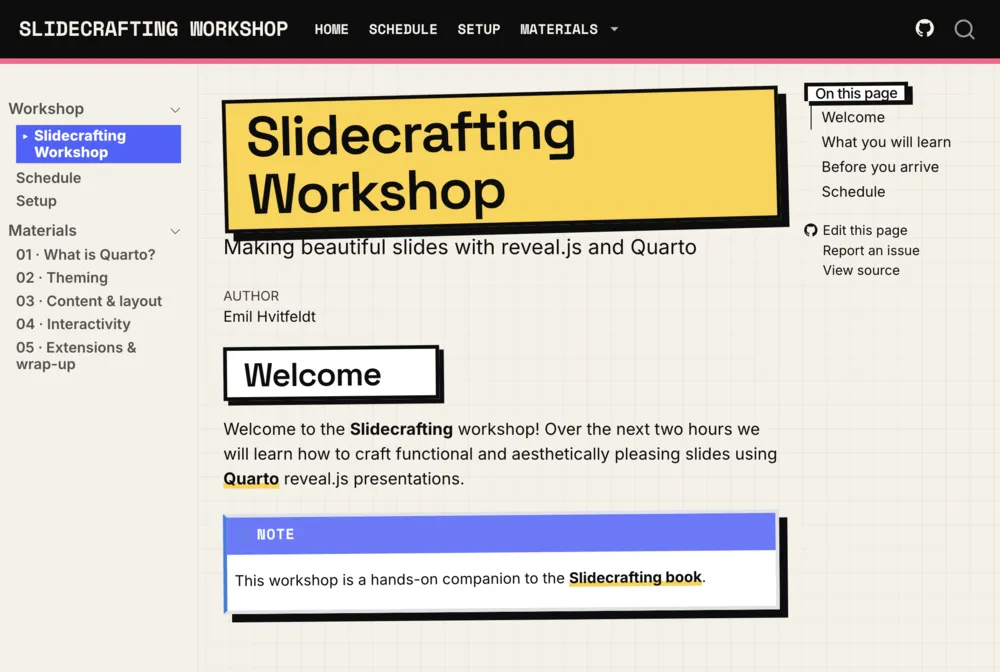
A 2-hour hands-on workshop on making beautiful slides with reveal.js and Quarto
Date: Aug 12, 2026
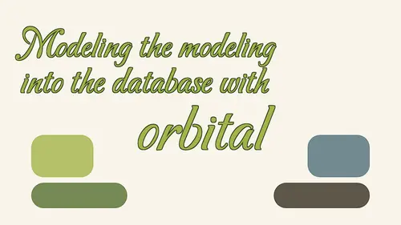
Introduction of the orbital package. Showing how we can turn fitted workflows into SQL
Date: Jul 30, 2026
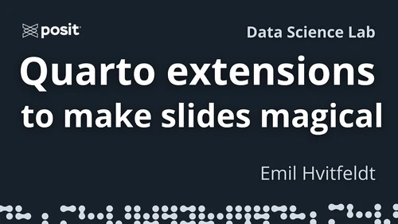
A tour of revealjs slide crafting in Quarto and the extensions that make it more fun
Date: Jul 23, 2026
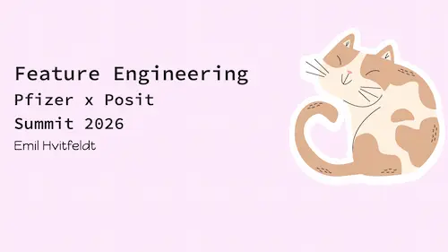
All about Feature Engineering, examples with Long Beach Animal Shelter.
Date: Jun 8, 2026
A broad overview of new features and tools for quarto
Date: Mar 19, 2026

Broad talk about why different performance metrics matter and how we choose
Date: Mar 5, 2026
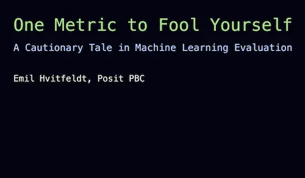
Broad talk about why different performance metrics matter and how we choose
Date: Feb 9, 2026
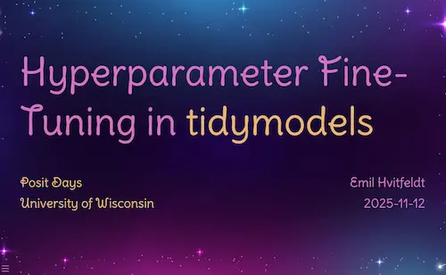
A view into the different kinds of hyperparameter tuning methods out there
Date: Nov 12, 2025
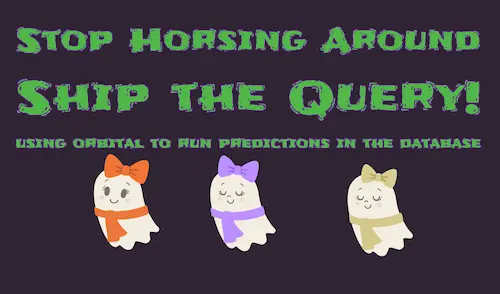
Progress so far in orbital, using orbital to run predictions in the data base
Date: Oct 16, 2025
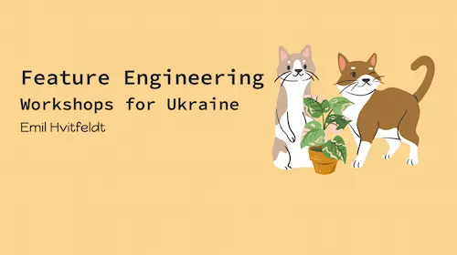
All about Feature Engineering, examples with Long Beach Animal Shelter.
Date: Oct 2, 2025
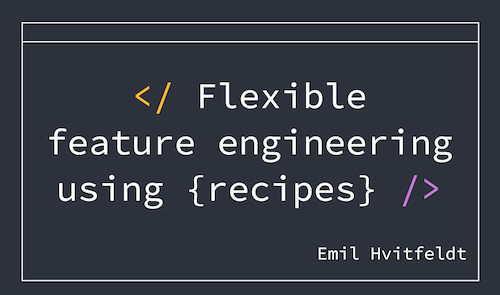
Delightful talk covering recipes from beginning to end.
Date: Aug 24, 2025
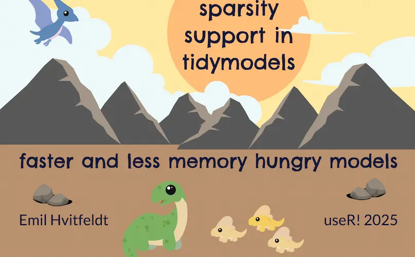
Showcasing better sparsity support in tidymodels
Date: Aug 10, 2025
Showcasing better sparsity support in tidymodels
Date: Jul 22, 2025
Introduction of the orbital package. Showing how we can turn fitted workflows into SQL
Date: Aug 13, 2024
Take your slides and give them some life
Date: Aug 6, 2024
using cli to make better error messages, with examples from tidymodels
Date: Jul 3, 2024
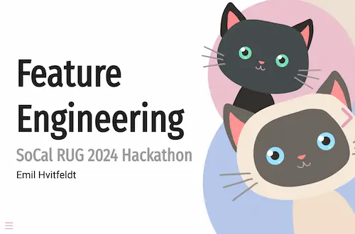
All about Feature Engineering, examples with Long Beach Animal Shelter
Date: Apr 27, 2024
Overview of new and exciting things in tidymodels and slightly upcoming things.
Date: Oct 26, 2023
worried about styling taking too much time? In 20 minutes you won’t anymore!
Date: Sep 19, 2023
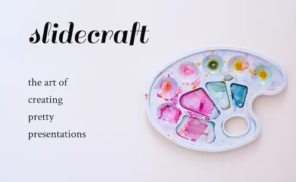
Making beautiful slides with quarto and revealjs
Date: Jul 13, 2023
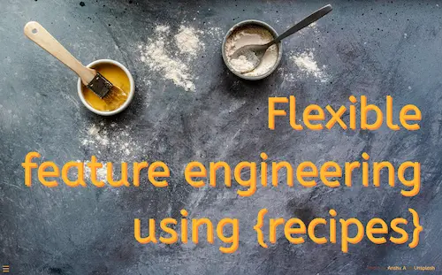
Delightful talk covering recipes from beginning to end.
Date: Jun 7, 2023
2 hour tutorial, 1 part text mining, 1 part modeling with text.
Date: Apr 22, 2023
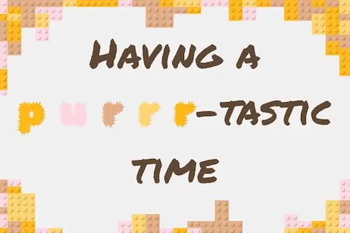
This was a small talk about purrr in general and some of the new things that was included in the 1.0.0 release.
Date: Feb 21, 2023
This talk marks the grand introduction of tidyclust, a new package that provides a tidy unified interface to clustering model within the tidymodels framework.
Date: Jul 27, 2022
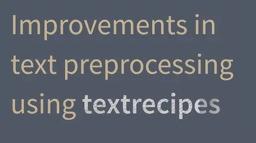
This talk gives a brief overview of the basic functionality of the textrecipes package and a look at exciting recent additions.
Date: Jun 23, 2022
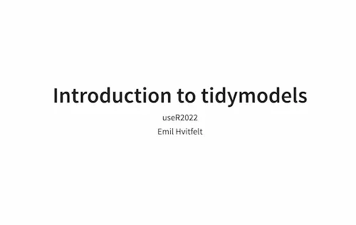
This workshop will provide a gentle introduction to machine learning with R using the modern suite of predictive modeling packages called tidymodels.
Date: Jun 20, 2022
This talk will pull back the curtain on a collective journey of learning, doing Advent of Code using R.
Date: Jun 9, 2022
This talk will take you around the myriad of customization and automation available to all RStudio users.
Date: Nov 23, 2021
This talk shows how we can use the pptxtemplates package to automatically style powerpoints.
Date: Aug 27, 2021
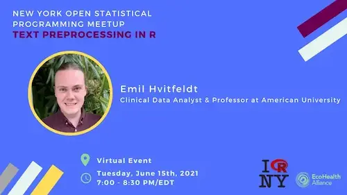
This talk will focus on the {textrecipes} package and its recent advancements in the realm of text preprocessing.
Date: Jun 15, 2021
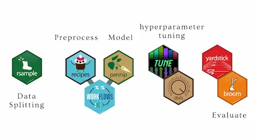
This talk will walk through the landscape of packages and their individual place, helping you get a bird's eye view.
Date: Jun 3, 2021
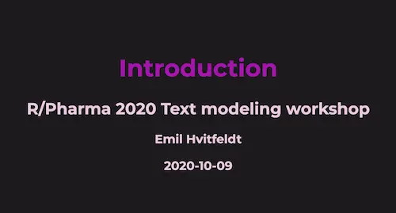
This tutorial is geared toward an R user with intermediate familiarity with R, RStudio, the basics of regression and classification modeling, and tidyverse packages such as dplyr and ggplot2.
Date: Oct 9, 2020
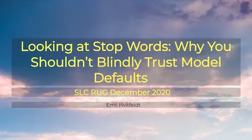
This talk will focus on the importance of checking assumptions and defaults in the software you use.
Date: Sep 26, 2020
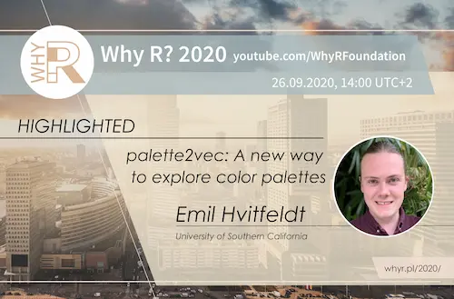
This talk shows what happens when we take one step further into explorability. Using handcrafted color features, dimensionality reduction, and interactive tools will we create and explore a color palette embedding.
Date: Sep 26, 2020
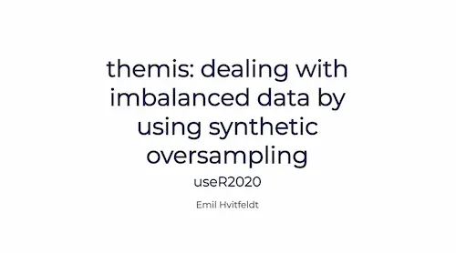
A walkthrough of the heart of the synthetic oversampling algorithms will be given in code and visualization along with talk about performance.
Date: Jul 9, 2020
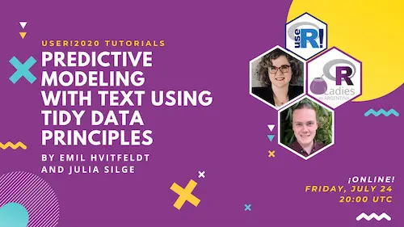
This tutorial is geared toward an R user with intermediate familiarity with R, RStudio, the basics of regression and classification modeling, and tidyverse packages such as dplyr and ggplot2.
Date: Jul 7, 2020
Talk about using the recipes package to do preprocessing.
Date: Jan 23, 2020
This seminar goes into detail why and how to use git in collaborative research.
Date: Jan 23, 2020
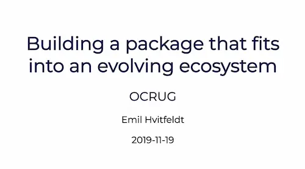
This talk tells the tale of the package textrecipes; starting with the Github issue that sparked the idea for the package, go over the trials and challenges associated with building a package that heavily integrates with other packages all the way to the release on CRAN.
Date: Nov 19, 2019
Hastly put together slides for Data-viz prep for Hackathon.
Date: Nov 9, 2019
This seminar will go through the different use cases for a R package, dos and don’ts and best practices.
Date: Mar 28, 2019
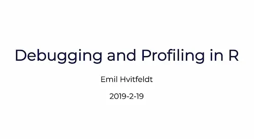
This seminar will cover strategies and techniques for performing debugging and code profiling in R.
Date: Feb 19, 2019
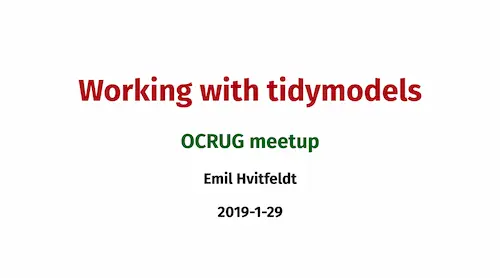
This talk will go through how to use tidymodels to do modeling in a tidy fashion.
Date: Jan 29, 2019
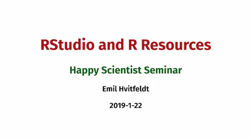
This seminar contains various links and resources for use in R and Rstudio.
Date: Jan 22, 2019
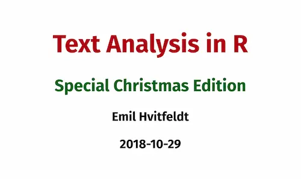
I’ll talk you through a structured way to do exploratory data analysis(also called text mining) using tidytext to gain insight into the plain unstructured text.
Date: Oct 29, 2018
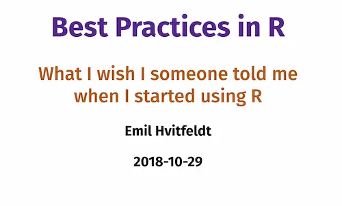
This presentation will let you though a lot of different aspects of what you can do in R to make yourself happy, make sure that future you is happy, and avoid getting mad at past you.
Date: Oct 29, 2018
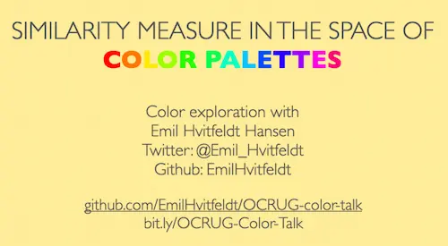
Talk about designing a similarity measure to look at color palettes.
Date: Sep 25, 2018